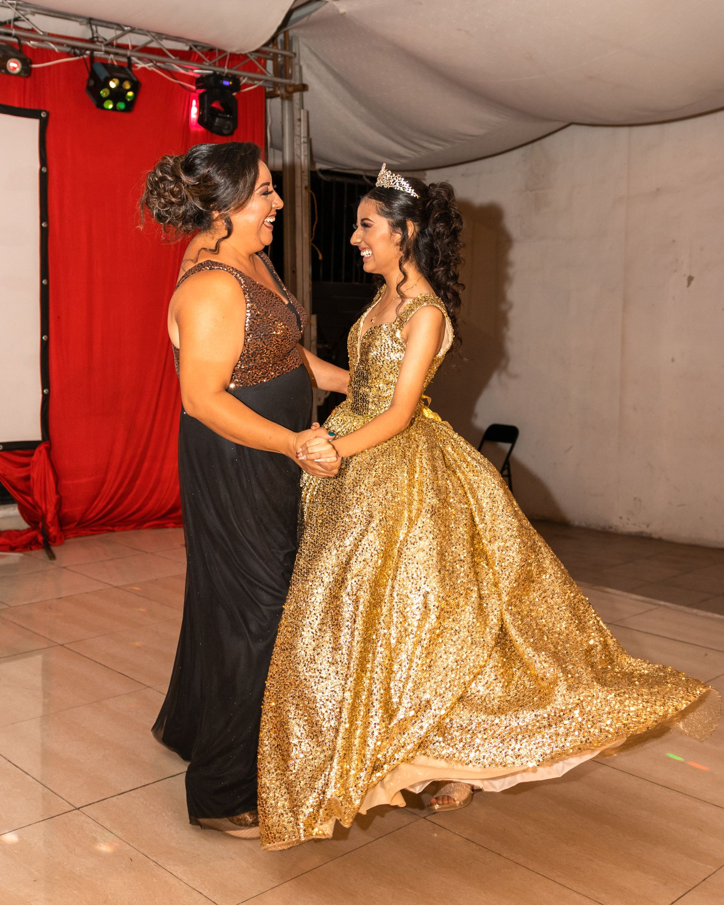
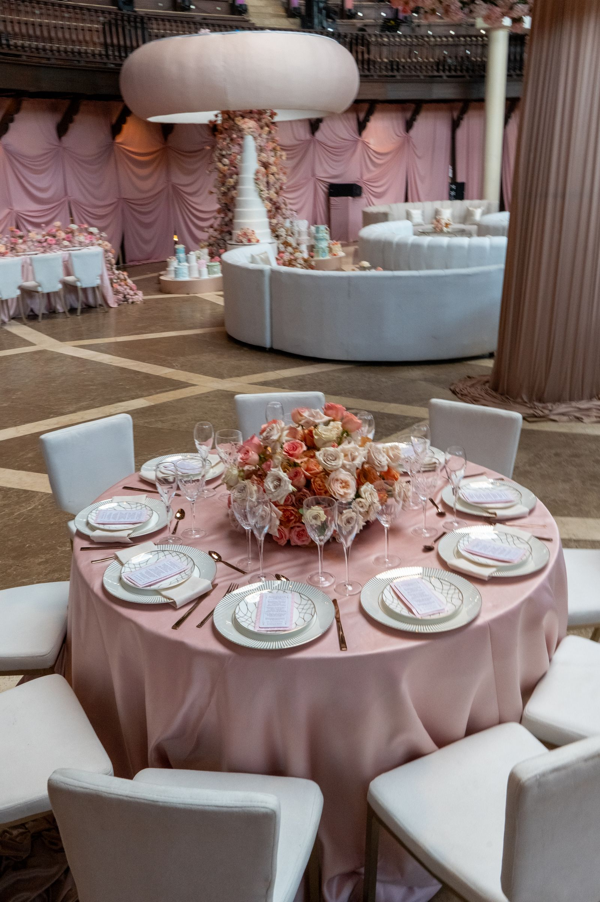
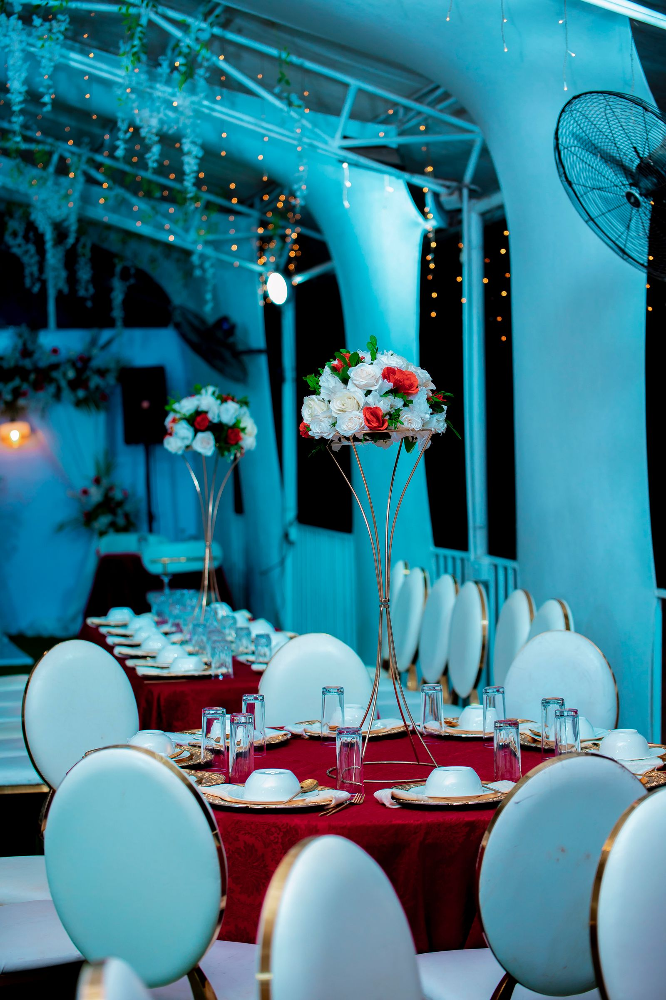
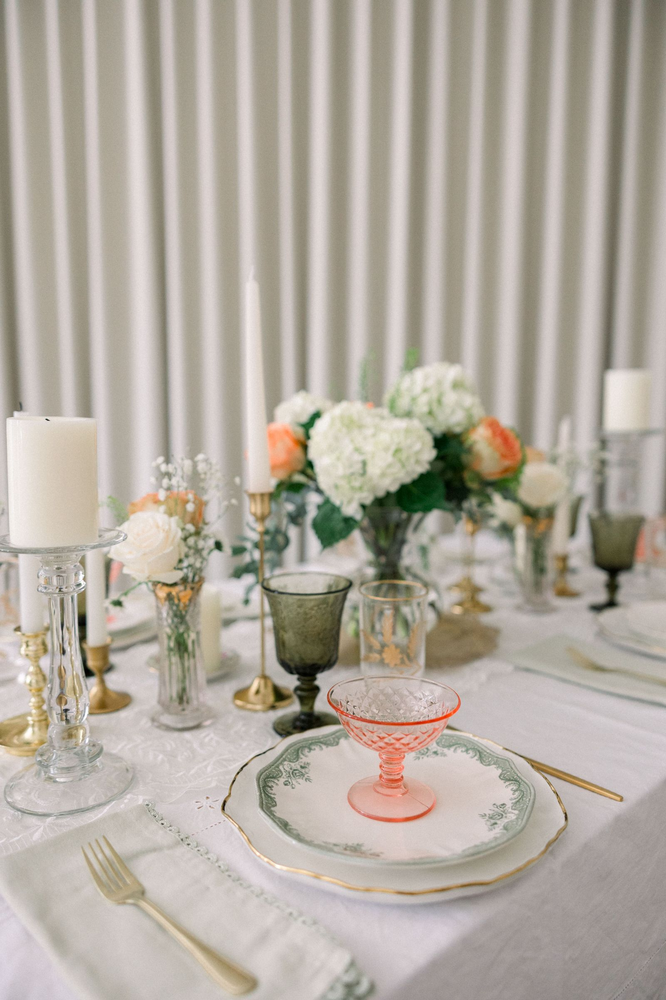
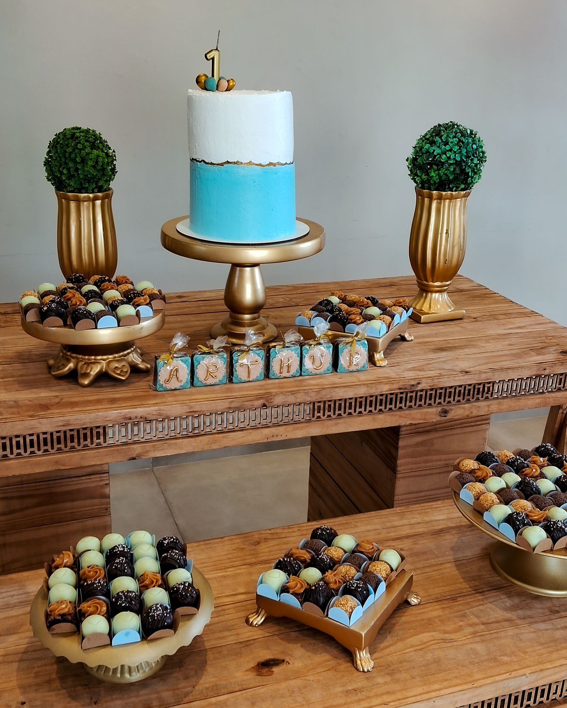
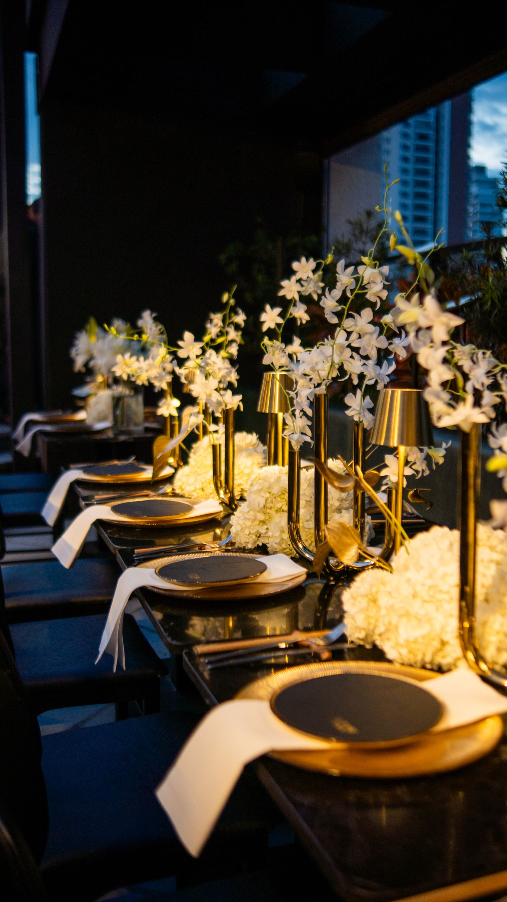

Family traditions
Share traditions, important roles, and cultural details early so they can be included in the schedule and event plan.

FREQUENTLY ASKED QUESTIONS
Browse by topic to find practical guidance about timing, services, budgets, and working together.
Ask us directlyGETTING STARTED

SERVICES

BUDGET & BOOKING

GUESTS & TRADITIONS

Share traditions, important roles, and cultural details early so they can be included in the schedule and event plan.

Consider access, seating, children, travel, and any accommodations guests may need.
STILL WONDERING?
We will help you identify a useful next step for your celebration.
Contact the planning team